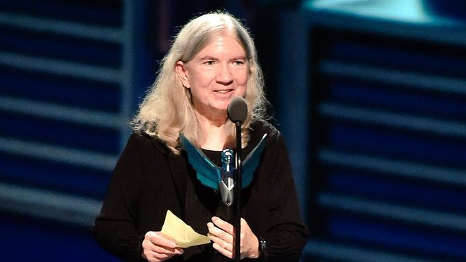

A primeira mulher a desenvolver um jogo foi Carol Shaw. Nascida em 1955, em Palo Alto, na Califórnia, Shaw venceu as barreiras da época para ir atrás do que realmente queria, fazendo história ao criar mais tarde, o jogo River Raid, um dos maiores clássicos do Atari 2600. Seu pai era engenheiro mecânico e trabalhava na Standford Linear Accelerator Center (ou o Centro de Aceleração Linear de Standford) – um laboratório que realizava projetos relacionados à energia para o governo. Sua mãe era dona de casa, mas, após um tempo, começou a trabalhar em uma livraria. Shaw era a irmã do meio de dois irmãos, e geralmente participava das brincadeiras que eles faziam. Seu pai e irmãos começaram a brincar com trens em miniatura e modelos de ferrovia, então ela começou a brincar também. Carol montou circuitos com alguns transistores para ligar luzes de sinal na mini ferrovia – um projeto que manteve até sua faculdade, e que largou quando entrou no curso de computação. Desde cedo, ela também possuía contato com jogos eletrônicos e com a matemática. Ela jogou Computer Space, o primeiro jogo arcade comercial, em uma sala de jogos arcade que havia no clube onde os pais jogavam minigolfe. Durante seu ensino fundamental e ensino médio, ela participou de várias competições de matemática, ganhando prêmios. E, desde pequena, Carol também enfrentou preconceito por participar ativamente da área de STEM (Science, Technology, Engineering e Mathematics – ou Ciência, Tecnologia, Engenharia e Matemática, em português)
Quando entrou na universidade, Shawn cursou Engenharia Elétrica e Ciências da Computação, dois campos de estudo ocupados por poucas mulheres nos anos 70. Shaw chegou até a conquistar um mestrado em Ciências da Computação na universidade de Berkeley. Shaw era talentosa e chamava atenção de várias empresas, incluindo a Atari, que logo a chamou para ser engenheira de software. Ela era bastante respeitada entre seus colegas por seu conhecimento, principalmente por ser uma das poucas pessoas que sabia manipular e utilizar o microprocessador 6052, uma das peças centrais do Atari 2600. Foi nessa época que Carol Shaw desenvolveu seus dois primeiros jogos, Polo e 3-D Tic-Tac-Toe. Polo foi desenvolvido no ano de sua contratação, em 1978, como material promocional para o perfume da Ralph Lauren; contudo, acabou não sendo lançado comercialmente. Já 3D Tic-Tac-Toe foi lançado em 1980 e consistia em uma versão tridimensional do jogo da velha. Ainda dentro da Atari, ela ajudou nos gráficos de Othello e começou o trabalho inicial de Super Breakout – mas não terminou porque deixou a empresa antes disso, em 1980.

Em dezembro de 1982, o jogo River Raid foi lançado para Atari 2600 – pela empresa Activision. Pouco tempo depois, River Raid se tornou um dos 13 jogos que venderam mais de 1 milhão de cópias na plataforma – se tornando não só um um clássico, como também um dos jogos mais populares da época. Um ano depois do seu lançamento, o River Raid foi eleito como o jogo mais desafiador pela revista InfoWorld. No ano seguinte, em 1984, foi considerado como “O jogo mais jogável e divertido do mundo” pela revista The Desert News, e ganhou o prêmio de “melhor game de ação do ano” e um certificado de mérito na categoria “1984 Best Computer Action Game” (ou “O Melhor Jogo Eletrônico De Ação de 1984”) durante o 5º Arkie Awards. As diversas premiações e as milhares de vendas tiveram motivo: River Raid foi inovador para a época. O jogo possui velocidades diferentes, colisão com diferentes objetos – que agiam de formas diferentes, onde alguns ficavam parados e outros se movimentavam lentamente ou rapidamente – e um sistema de abastecimento da aeronave do jogador. O jogo também é considerado o pai do Checkpoint, pois era necessário que a aeronave controlada pelo jogador abastecesse para continuar seu trajeto.
Porém, Carol deixou a indústria de games para trás para trabalhar em outras áreas e por fim, conseguiu se aposentar cedo – graças ao sucesso de River Raid -, mas ela ainda se manteve ativa com trabalhos voluntários e empregos de meio período. Seu legado, no entanto, não foi esquecido. Carol Shaw foi a primeira mulher a desenvolver um game, mas não a única: sua história serviu de inspiração para outras mulheres na indústria dos videogames.
